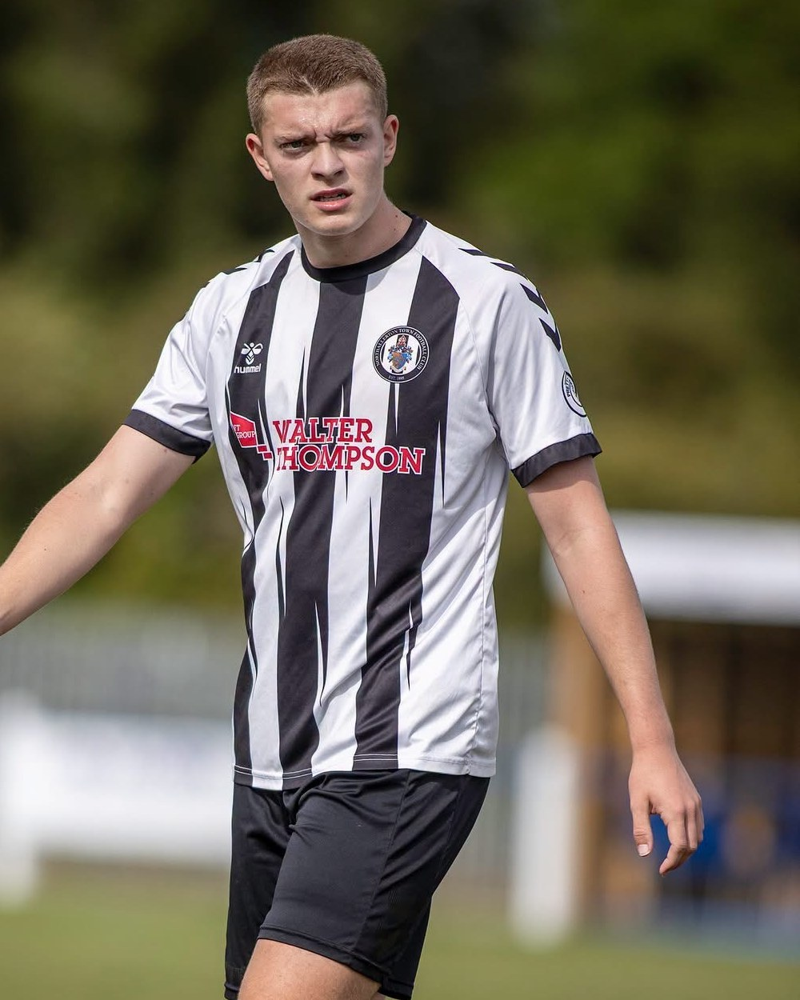
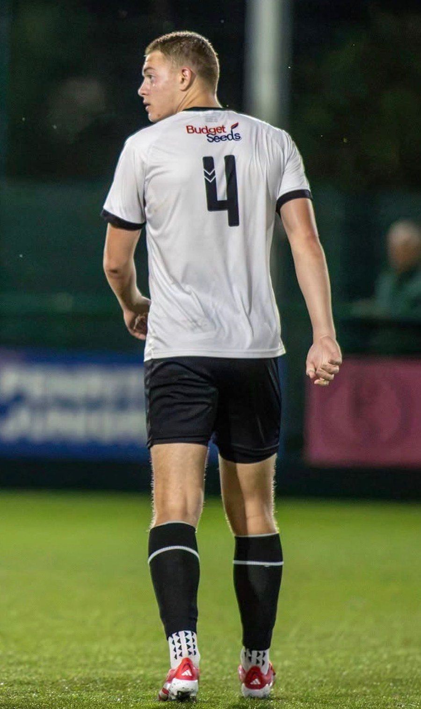

Central midfield is Joe's primary position — the analysis on The Complete 8 is built around it. He is also profiled at centre-back, with 17 senior games across five clubs and current EFL interest in the role.
The modern centre-back is not the same job it was ten years ago. Height and heart are the starting point, not the finish. Recruiters now look for five things at the same time: playing out from the back, breaking lines with a pass, driving out with the ball, defending the space, and winning the duel.
At 6'2" with the athletic and technical profile evidenced across this site, Joe has the full modern CB profile. He has played 17 senior games at centre-back across five clubs — Scarborough Athletic U19s, Gateshead Academy, Billingham Town, Marske United and Northallerton Town — spanning academy football through Step 5, and is currently being profiled by EFL clubs for the position.
Takes the ball from the keeper and the full-backs under pressure, and starts the move.
See Joe’s evidenceFive areas of the game a modern centre-back has to deliver: three on the ball, two off it. Choose any part of the 5 to see Joe’s evidence for it.
The recruitment gap between CBs who play out from the back and CBs who just hoof it is now huge. Pro clubs want the ball-playing centre-back: two-footed, comfortable receiving under pressure from a pressing striker, able to progress the ball with a pass through the lines rather than around them.
"Receive on back foot well, hold off man, head up to know where to play early or utilises his strength to roll man and play forward."
David Banjura
Former National League Chief Scout
"From a technical aspect I can't speak highly enough of Joe and would say this is his outstanding attribute. Superb with both right and left foot in terms of close ball control, first touch and short passing."
Mark Hodgson
Head Coach, Brazilian Soccer Schools
The passing evidence for Joe already exists on this site, gathered from his midfield performances. Two-footed, verified for weight and range, comfortable receiving on the back foot with a defender close. All of that is exactly what a pressing striker asks a CB to demonstrate — and it is the part of a CB's game that decides which level a player ends up at.
This is the section that will grow fastest as CB-specific footage is added, because the evidence base from midfield is already deep.
The modern CB is expected to take a line of players out of the game with one pass: into midfield, into the striker, or across the pitch to switch the play. A centre-back who can only pass sideways hands the problem to someone else.
"Your ability to see a forward pass is excellent. Your control and composure is very good. The standard in your passing and receiving a ball in space would only improve with better players around you."
William Kinniburgh
Scout, Motherwell / Oxford United
"He is a threat with the ball, can pick a hard pass, play through the lines, and judges his attacking runs well."
David Banjura
Former National League Chief Scout
This is where Joe's range really shows. He switches the play accurately over 40-50 yards, fizzes balls through the lines into feet and runners, and delivers quality from wide and deep positions. The ability to see a forward pass and execute it with the right weight is what multiple scouts have flagged as his standout quality.
When the press comes and the pass is not on, the modern CB steps past the first press with the ball at his feet and carries it into midfield, committing an opponent before he releases it.
"Showed the confidence and technical ability to carry the ball out of defence and into higher midfield areas."
Jack Manship
Scout, Doncaster Rovers / Minnesota United
"When you were able to drive forwards you were an asset to the attacking play. As a strong competitor you can really drive at players and draw fouls or threaten."
John Rhodes
Scout, Shrewsbury Town FC
Joe carries with purpose. He doesn't dribble for the sake of it — he drives forward to break lines, commit defenders and create advantages for the players around him. At 6'2" and 85kg with a verified top speed of 34 km/h, defenders can't bump him off the ball or run him down.
Watch how he picks his moments. He recognises when a carry is more effective than a pass, and he has the physical tools to execute it against senior men.
The centre-back is the eyes of the back line. He is reading the game two passes ahead, positioning early, and organising the players around him so the defence never has to react — it acts. This is the difference between a defender who runs a lot and one who covers ground he never has to.
Modern back lines defend high. That works only if the centre-backs have the recovery pace to close down a runner in behind, and the acceleration to stop attackers turning into space. Slow CBs cost goals; fast CBs let a whole team play higher.
"Excellent reading of the game and decision-making. Very good range of passing and excellent positioning; tactically disciplined and composed in possession."
Middlesbrough FC
Academy Assessment
"Shows maturity beyond his years. Leading, instructing and organising teammates from the moment he steps on the pitch."
Stoke City
U23 Trial Assessment
"Cover the ground well on recovery run. From 1 side of the pitch to the other stopping a counterattack and winning a throw in."
William Kinniburgh
Scout, Motherwell / Oxford United
The 0.91 vs 2.74 goals-per-90 pattern at Marske United across 2025/26 is a defensive impact number — it does not care whether Joe is nominally playing midfield or the back line. The intelligence that reduces goals against from a midfield position transfers directly to CB, and typically becomes even more valuable there where the whole back line takes its cue from the CB's positioning.
The same pattern followed him to Northallerton Town in 2026/27, where he played at the back rather than in midfield: 1.96 goals conceded per 90 with Joe on the pitch against 4.24 without, over four games. A small sample on its own, but it repeats the Marske pattern at a second club and in a different position.
This is also where the leadership signal sits. Multiple scouts have flagged Joe's communication and organising quality as unusually mature for his age. In a back-line role, that quality shows up in the shape of the entire defence, not just his own actions.
Joe's 34 km/h top speed is verified across three independent platforms: PROformance instrumented testing, STATSports GPS in match conditions, and PlayerMaker boot-strap data. That speed is not lab-only — it shows up when he is chasing a ball or a runner in a game.
The 5m sprint at 0.91s matters more than the top-end for a CB. It is the burst that turns a lost yard into a recovered one when an attacker gets on the shoulder. Both numbers give a coach freedom to play a higher line.
Modern CBs step out to defend, not shuffle back. They engage early, meet attackers on the front foot, and win the physical exchange when it comes. The alternative — dropping and dropping — gives strikers time to turn, pick a pass, and shoot.
The modern CB has to win aerial duels on both sides of the pitch — defending set pieces and long balls, and attacking corners as a genuine goal threat. Height and jump numbers are the starting point; timing and intent are what turn them into wins.
"On field personality and combative nature which allows you to win duels all over the pitch."
Aaron Barnes
Scout, Stoke City FC
"He has now developed into an extremely strong and physical athlete. This allows him to not only cover huge distances during games, but also dominate physically due to his height and strength."
Mark Hodgson
Head Coach, Brazilian Soccer Schools
Joe defends on the front foot because he has the physical tools to make that decision safely — the 5m burst to close space, the frame to hold his line in a duel, and the strength to win a shoulder-to-shoulder. He does not need to sit off.
The verified broad jump of 305cm is a proxy for lateral power — the same trait that shows up in a defensive slide tackle or a hold-off against a striker's roll.
Joe wins his headers because he combines the physical base (6'2", genuinely explosive vertical) with the timing to attack the ball at its highest point rather than react to it. The verified 60.1cm countermovement jump and 62.5cm Abalakov jump place him firmly in the elite range for his age group.
That physical base translates into two jobs: dominating defensive set pieces at Step 4 and higher, and being a genuine attacking threat from corners. Both boxes.

Seventeen senior games at centre-back across five clubs, spanning academy football through Step 5. Consistent selection across multiple coaches independently seeing the CB profile.
Alongside the ongoing central-midfielder pathway, Joe is currently being profiled by EFL clubs for the centre-back position — a direct scout signal that the modern CB profile above matches what pro clubs are actively recruiting for.